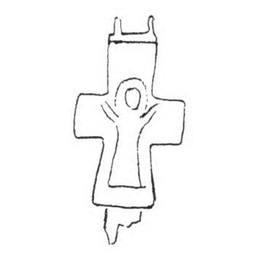

Catalog › CE-0231 · KOR2003-I.1.15
Valvă de revers de encolpion miniatural cu Maica Domnului Orantă, relief foarte jos și șters
sec. X–XII (901–1200) · loc necunoscut · Muzeul Național de Istorie al Ucrainei, Kiev, inv. В-981
single valve of a reliquary cross, aramă; c. X–XII (901–1200); find spot unknown; kept at Muzeul Național de Istorie al Ucrainei, Kiev.


Identificare
- Categorie
- Valvă izolată
- Material
- Aramă
- Tehnică
- Turnare în relief
- Dimensiuni
- Î 37 × L 25 × Gr 3.5 mm
Iconografie
- Revers
- Maica Domnului Orantă
- Descriere revers
- Valvă de revers de encolpion miniatural, cu capete drepte, ușor lărgite (balamaua dreaptă de jos este pierdută), cu imaginea în relief foarte joasă și ștearsă a Maicii Domnului Orantă în picioare.
Datare și atribuire
- Datare
- sec. X–XII (901–1200)
- Centru
- Necunoscut
- Tipologie
- Korzukhina–Peskova 2003, tip I 1
Descoperire
- Context
- Colecție (fără context)
Păstrare și referințe
- Colecție
- Muzeul Național de Istorie al Ucrainei, Kiev
- Nr. inventar
- В-981
- Bibliografie
- G. F. Korzukhina, A. A. Peskova, Древнерусские энколпионы. Нагрудные кресты-реликварии XI–XIII вв., Sankt-Petersburg, 2003 [Korzukhina–Peskova 2003], p. 47, cat. nr. I 1/15, reprodusă la Табл. 2 (planșe, p. 244).
- Figura
- Табл. 2
- Planșe
- Korzukhina–Peskova 2003, Табл. 2 (planșă fără paginație proprie în PDF; p. 244 tipărită)
- Observații
- Datare după Peskova: sec. X–XII. Coordonate: nu sunt date în sursă.
Citare: Corpus Encolpiorum, CE-0231, Valvă de revers de encolpion miniatural cu Maica Domnului Orantă, relief foarte jos și șters, --root/piese/KOR2003-I.1.15/ (accesat 2026-10-17).